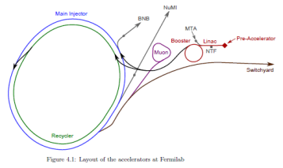
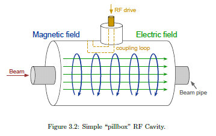
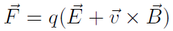
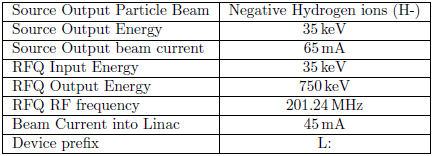

What is LaTeX
LaTeX (pronounced lay-tech or lah-tech) is a markup language used to typeset documents. Just as with HTML, editing is done in a text file and the product is rendered through another medium.
HTML → Browser | LaTeX → PDF
Advantages of LaTeX
- Only need to learn commands for basic document structure; little need to tinker with the layout of the document.
- Allows you to focus on the content rather than the appearance of your document.
- Easy to typeset complex mathematical formulas.
- Tedious elements like table of contents; lists of figures and tables; numbering of sections, tables, and figures; bulleted/enumerated lists; footnote numbers; cross-reference numbers; and bibliographies are automatically generated AND updated when the document changes.
- Facilitates consistent presentation of documents.
- Easy to scale your document to create a very large one.
- Portability of the input file (simple text file) and of the output file produced (PDF).
- Professional quality output.
- Stability - LaTeX never crashes or corrupts your files.
Producing a Simple Document
LaTeX files are simply text files. These text files are interpreted by a compiler into your PDF output document. (Feel free to look at all of these text files in your text editor to see the structure)
Some common file extensions that you will see are:
- .tex (LaTeX input file that defines content and specific formatting)
- .sty (Style guide file; contains packages(plugins) and document-wide formatting)
- .bib (Bibliography database file)
- .pdf (Typical Adobe Acrobat file; the output of LaTeX)
- .log (Compile log; for reviewing and troubleshooting compilation)
- .aux (An auxiliary file that saves information for the creation of table of contents, references, indices, bibliographies and other things like that.)
- Images (may be in any of the following formats)
- .jpg
- .png
File Structure
This Concepts Rookie Book setup represents a basic file structure of every rookie book folder.
- \\beamssrv1.fnal.gov\operations.bd\
- Public\
- rookiebooks\
- OpsRookieBooks\
- ConceptsTeX\
- img\ (folder for storing images)
- tex\ (folder for storing .tex chapter files)
- con_chap1.tex (chapter 1 content)
- con_chap1.aux (LaTeX generated content)
- con_chap2.tex (chapter 2 content)
- con_chap2.aux
- concepts.tex (content and formatting)
- concepts.pdf (the output after compiling a .tex file; the product)
- rbstyle.sty (the style guide for the books)
- citations.bib (bibliography references)
- definitions.tex (glossary definitions)
- ConceptsTeX\
- OpsRookieBooks\
- rookiebooks\
- Public\
Document Structure
- Table of Contents
- List of Figures
- List of Tables
- Part (this won't be used often)
- Chapter
- Section
- Subsection
- Subsubsection
- Subsection
- Section
- Appendix
- Chapter
- Part (this won't be used often)
- Glossary
- Index
- Acknowledgements
- Bibliography
File Names
- The book tex file should be in the format RookieBookTeX.tex
ie. switchyard.tex - Regular chapter files should be named with an abbreviated form of the title followed by the chapter title, separated by an underscore
ie. sy_controls.tex - For appendicies add an "_a"
ie. sy_maps_a.tex
Basic Document
This is a very basic document that will print something that looks like:
| \documentclass{book} \usepackage{} \begin{document} \textbf{This} is a one page \textit{document}! \end{document} |
← Defines the type of document ← Defines the style of the document ← Begins content input ← Content ← Ends content input |
Editing
Edit as you normally would edit a document with any text editor.
I prefer to right click and edit the file I want with Notepad++.
CTRL-S to save, frequently!
Compiling a PDF
Knowing how to output a product will be necessary in learning LaTeX. There are a couple of simple methods for doing this.
LaTeX Compile Script
Navigate to Y:\Public\rookiebooks\tools
You can open the file "pdfLaTeXcompiler" from here
Or drag the link to your desktop
Notepad++ to LaTeX Compile Script
Open Notepad++
Open the menu RUN > RUN... (or F5)
Input the following into the file prompt
Click SAVE...
Name the shortcut and assign a shortcut key
Compiling
To compile a document open the main .tex file
This can be found in the main folder of the book you are working on
Once this file is open use the compile script of your choice
This will open a Windows CMD prompt*
Be patient, as this may take up to a minute
After it is complete it will produce a PDF for you**
Basic LaTeX Commands and Syntax
Spaces
"Whitespace" characters, such as blank or tab, are treated uniformly as "space" by LaTeX. Several consecutive whitespace characters are treated as one space". Whitespace at the start of a line is generally ignored, and a single line break is treated as "whitespace." An empty line between two lines of text defines the end of a paragraph. Several empty lines are treated the same as one empty line. The text below is an example. On the left hand side is the text from the input file, and on the right hand side is the formatted output.
| It does not matter whether you enter one or several spaces after a word. An empty line starts a new paragraph. |
It does not matter whether you enter one or several spaces after a word. An empty line starts a new paragraph. |
Reserved Characters
Certain characters are reserved for LaTeX commands and need to be "escaped" in order to be displayed as text. To escape a reserved character, allowing it to be printed as text in your document, prefix the character with a backslash:
\# \$ \% \^ \& \_ \{ \} \~ \textbackslash{}
# $ % ^ & _ { } ~ \
Notes on Quotes
" ` " or " `` " (tilde key) should be used for left quotes
" ' " or " '' " (single apostrophe key) should be used for right quotes
Syntax
All LaTeX commands begin with a \ followed by the command name which is followed by the content the command affects in between {}.
ie. \bf{BOLD FACE} → BOLD FACE
Environments
Environments change the way a small piece of a document is formatted.
Lists:
\begin{itemize} \item \item \item \end{itemize}Figures:
\begin{figure} \includegraphics{filename} \end{figure}Math:
Inline equation - $...$
Stand alone equations - $$...$$
Common Commands
Comments may be placed in LaTeX by starting a line with a %
\chapter{chapter_title} (defines a chapter)
\section{section_title} (defines a section)
\subsection{subsection_title} (defines a subsection)
\subsubsection{subsubsection_title} (defines a subsubsection)
\label{item:item_title} (labels anything for reference)
- items
- chap (chapters)
- fig (figures)
- tab (tables)
- eq (equation)
~\ref{item:item_title} (references any label)
\footnote{footnote} (Add Footnote)
\marginpar{margin_notes} (Add Margin Notes)
\textbf{bold_text} (Bold Text)
\textit{italicised_text} {Italicised Text}
\textcolor{color}{text} (Color Text)
\href{url}{text} (Add a Link)
\begin{environment}
- environments
- figure (Figure, usually images)
- \caption[short caption for List of Figures]{caption_text}
- itemize (Bulleted List)
- \item list_item
- enumerate (Numbered List)
- \item list_item
- table
- \caption[short caption for List of Tables]{caption_text}
- equation (Math Environment)
- figure (Figure, usually images)
\end{environment}
\cite{bib_key} (References source in citations.bib)
\index{index_key} (Identifies and item for the index)
References
\figref{"figure key"}Figure 7.1
\equref{"equation key"}Equation 2.3
\chapref{"chapter key"}Chapter 6
\secref{"section key"}Section 1.1.1
\apref{"appendix key"}Appendix B
Typical Reference
| \begin{figure}[!htb] \includegraphics[width=0.85\fp]{acc-map} \caption{Layout of the accelerators at Fermilab} \label{fig:acc-map} \end{figure} The layout of the machines, including the beamlines that connect them to one another, should be studied in detail. \figref{fig:acc-map} contains a minimal amount of information, but more will be added as the machines are introduced. |
 The layout of the machines, including the beamlines that connect them to one another, should be studied in detail. Figure 4.1 contains a minimal amount of information, but more will be added as the machines are introduced. |
Typical Figure
| \begin{figure}[!htb] \centering \includegraphics[width=0.9\linewidth]{RFcav} \caption{Simple ``pillbox'' RF Cavity.} \label{fig:RFcav} \end{figure} |  |
Typical Equation
| \begin{equation} \label{eq:Lorentz} \vec{F}=q(\vec{E}+\vec{v} \times \vec{B}) \end{equation} |  |
Typical Table
| \begin{table}[H] \centering \begin{tabular}{| l | c |} \hline Source Output Particle Beam & Negative Hydrogen ions (H-) \\ \hline Source Output Energy & \kev{35} \\ \hline Source Output beam current & \ma{65} \\ \hline RFQ Input Energy & \kev{35} \\ \hline RFQ Output Energy & \kev{750} \\ \hline RFQ RF frequency & \Mhz{201.24} \\ \hline Beam Current into Linac & \ma{45} \\ \hline Device prefix & L: \\ \hline \end{tabular} \caption[Pre-Accelerator Machine Parameters]{} \label{tab:preacc-params} \vspace{-3em} \end{table} |  |
Margin Notes
| \marginpar{\keyterm{Ferrite Tuners} are small coaxial waveguides loaded with ferrite that change the resonant frequency of RF cavities in synchrotrons.} | Ferrite Tuners are small coaxial waveguides loaded with ferrite that change the resonant frequency of RF cavities in synchrotrons. |
Glossary References
Glossary terms are defined in the definitions.tex file. A typical definition is in the format below:
\newglossaryentry{computer} { name=computer, description={is a programmable machine that receives input, stores and manipulates data, and provides output in a useful format}, plural=computers }
Terms from the definitions files may be referenced with the following shortcuts:
\glslower case term
\GlsUpper Case Term
\glsplplural lower case terms
\GlsplPlural Upper Case Terms
Custom Commands
\keyterm{key_term} (Highlight defined terms) Key Term
\comment{comment_text} (Applies green italics) [Comment]
\e (E notation) ie. \e{13e12} outputs 13E12
\degree (Degree notation) \degree{360} outputs 360°
\fp (defines the full page width)
Experiment Names
\nova (displays NOνA)
\minerva (displays MINERνA)
SI Units
\m (meter)
\V (volt)
\kv (kilovolt)
\Mv (megavolt)
\ma (milliampere)
\A (ampere)
\ev (electronvolt)
\kev (kiloelectronvolt)
\Mev (megaelectronvolt)
\gev (gigaelectronvolt)
\tev (teraelectronvolt)
\hz (hertz)
\khz (kilohertz)
\Mhz (megahertz)
\us (microsecond)
\ms (millisecond)
\s (second)
ie. \hz{12} outputs 12Hz
Mathmatical Equations
Inline Equations \(...\) or $...$
Stand Alone Equations \[...\] or $$...$$
In order to label or add captions to equations they must be in the equation "environment" this is done with
\begin{equation}
mathmathmaths
\end{equation}
LaTeX Tips
- If you are just editing text, I would recommend compiling only a draft version. This can be done by adding [draft] to the document class
ie. \documentclass[draft]{book}*
*This will prevent pictures from rendering but save the space with place holders - Don't forget to include a reference to your chapter in the book document.
ie. \include{./tex/con_intro}
Git Backup
Git Commits
Git is a repository for files. It handles backing-up our Rookie Book files. Git saves an instance of the project every time someone "commits" files to the server. When you commit you are grouping all changes since the last commit. Commits need your full name and email as well as a message to remind you and tell others what happened during that commit. The compile scripts will ask for this message. The script should produce a status to let you know if it was successful.
That is ALL!
Troubleshooting
Common Issues
| No PDF Produced | The command prompt should stall with an error explaining why the PDF did not compile. If the command prompt is not present, there is a .log file that should hold the same information. |
| Runaway Argument | If the script stalls with a "runaway argument?" suggestion this means you have most likely forgotten to close an environment or curly bracket somewhere. |
Helpful Links
Google is your friend!
LaTeX WikiBook
LaTeX Math
LaTeX Bibliography
LaTeX Indexes
LaTeX Cheat Sheet